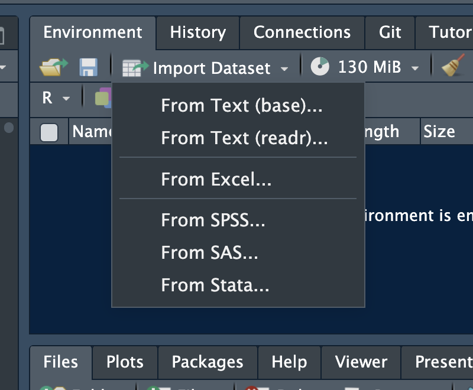
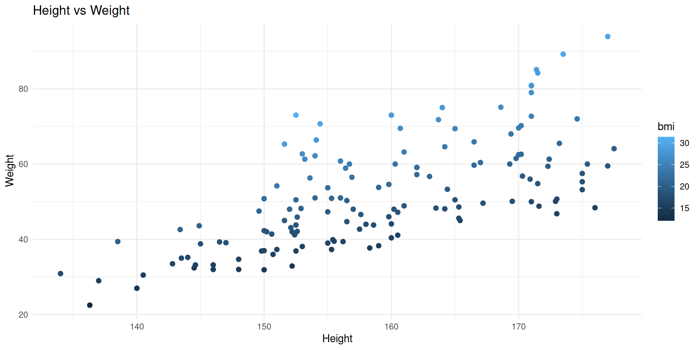

flowchart LR A["<b><font size=6>READ</font></b><br/><font size=6>the code</font><br/><i><font size=5>(understand logic)</font></i>"]:::blue --> B["<b><font size=6>MODIFY</font></b><br/><font size=6>a parameter</font><br/><i><font size=5>(change a number)</font></i>"]:::green --> C["<b><font size=6>RUN</font></b><br/><font size=6>the chunk</font><br/><i><font size=5>(click play)</font></i>"]:::orange --> D["<b><font size=6>INTERPRET</font></b><br/><font size=6>the output</font><br/><i><font size=5>(what changed?)</font></i>"]:::red D -. "<b><font size=6>Try again</font></b>" .-> B classDef blue fill:#4e79a7,color:#fff classDef green fill:#59a14f,color:#fff classDef orange fill:#f28e2b,color:#fff classDef red fill:#e15759,color:#fff
An Orientation to R
Getting comfortable with R and RStudio
Dr Ashwini Kalantri
Professor of Community Medicine, MGIMS, Sevagram
17 Mar 2026
⚠️ Warning ⚠️
This is not an R programming course.
Goal
When you see R code:
- You are not
intimidatedby it - You
recognisewhat it is doing - You can
runit and see output - You can
changean input value
The RStudio Interface


The Workflow
Working with .qmd Files
All workshop materials are in Quarto (.qmd) files:
- Text — explanations
- Code chunks — grey blocks with R code
- Outputs — results, tables, plots
To work with a .qmd file:
- Open it in RStudio
- Read the text explanations
- Run code chunks one at a time (click the green play button ▶)
- See the output appear below each chunk
- Modify values and re-run
Your first code
[1] "Coding for better health decisions."Commenting
Assignment
Assign a value to a name with <-
[1] "Coding for better health decisions."You may see -> or = used for assignment.
Operators
Arithmetic
Addition
Subtraction
Multiplication
Division
Exponentiation
Relational
Greater
Less than
Equal
Relational
Greater or equal
Less than or equal
Not Equal
Objects
Vectors
[1] 2.0 4.0 6.0 8.0 3.0 5.5treatment_A treatment_B treatment_C
5000 3000 7000 [1] 3Matrix
[,1] [,2] [,3] [,4] [,5] [,6]
[1,] 1 7 13 19 25 31
[2,] 2 8 14 20 26 32
[3,] 3 9 15 21 27 33
[4,] 4 10 16 22 28 34
[5,] 5 11 17 23 29 35
[6,] 6 12 18 24 30 36Multiplying Matrices
Data Frames
age <- c(12,24,NA,23,65,33) # create age vector
gender <- c("M","F","F","M","M","F") #create gender vector
occu <- factor(c(1,4,3,2,4,5), #occupation
levels = c(1:5),
labels = c("Unemp","Service","Student","Business","Prof"))
#date of birth
dob <- c(as.Date("1993-01-16"),as.Date("1963-12-24"),as.Date("1971-01-05"),
as.Date("1982-11-11"),as.Date("1984-05-15"),as.Date("1999-03-07"))
#create data frame
df <- data.frame(age,gender,occu,dob)Data Frames
age gender occu dob
1 12 M Unemp 1993-01-16
2 24 F Business 1963-12-24
3 NA F Student 1971-01-05
4 23 M Service 1982-11-11
5 65 M Business 1984-05-15
6 33 F Prof 1999-03-07Functions
Functions
Packages
Rows: 6
Columns: 4
$ age <dbl> 12, 24, NA, 23, 65, 33
$ gender <chr> "M", "F", "F", "M", "M", "F"
$ occu <fct> Unemp, Business, Student, Service, Business, Prof
$ dob <date> 1993-01-16, 1963-12-24, 1971-01-05, 1982-11-11, 1984-05-15, 199…Install once, load every time
Pipes
|> or %>%
Importing Data
Importing Data with GUI

Importing Data with Code
CSV
Excel
Stata, SPSS
A Swiss-Army Knife for Data I/O
Loops
For loops
BMI of Record No 1 is 21.63
BMI of Record No 2 is 20.62
BMI of Record No 3 is 23.7
BMI of Record No 4 is 15.62
BMI of Record No 5 is NA
BMI of Record No 6 is 18.76
BMI of Record No 7 is 14.2
BMI of Record No 8 is 27.02
BMI of Record No 9 is 19.72
BMI of Record No 10 is 21.22
BMI of Record No 11 is 22.52
BMI of Record No 12 is 24.08
BMI of Record No 13 is 15.01
BMI of Record No 14 is 16.43
BMI of Record No 15 is 21.66
BMI of Record No 16 is 15.87
BMI of Record No 17 is NA
BMI of Record No 18 is 17.63
BMI of Record No 19 is 15.78
BMI of Record No 20 is 17.21
BMI of Record No 21 is 16.44
BMI of Record No 22 is 20.54
BMI of Record No 23 is 18.32
BMI of Record No 24 is 21.71
BMI of Record No 25 is 13.78
BMI of Record No 26 is 20.72
BMI of Record No 27 is 29.63
BMI of Record No 28 is 16.34
BMI of Record No 29 is 20.77
BMI of Record No 30 is 17.79
BMI of Record No 31 is 18.06
BMI of Record No 32 is 20.62
BMI of Record No 33 is 22.58
BMI of Record No 34 is 19.58
BMI of Record No 35 is 26.12
BMI of Record No 36 is 18.31
BMI of Record No 37 is 29.66
BMI of Record No 38 is 18.63
BMI of Record No 39 is 22.35
BMI of Record No 40 is 20.96
BMI of Record No 41 is 17.44
BMI of Record No 42 is 14.61
BMI of Record No 43 is 18.25
BMI of Record No 44 is 19.17
BMI of Record No 45 is 18.45
BMI of Record No 46 is 23.62
BMI of Record No 47 is 29.97
BMI of Record No 48 is 17.41
BMI of Record No 49 is 18.63
BMI of Record No 50 is 24.44
BMI of Record No 51 is 17.74
BMI of Record No 52 is 16.76
BMI of Record No 53 is 19.69
BMI of Record No 54 is 16.57
BMI of Record No 55 is 15.15
BMI of Record No 56 is 27.96
BMI of Record No 57 is NA
BMI of Record No 58 is 18.25
BMI of Record No 59 is 15.58
BMI of Record No 60 is 18.13
BMI of Record No 61 is 15.95
BMI of Record No 62 is 14.18
BMI of Record No 63 is 19.47
BMI of Record No 64 is 24.08
BMI of Record No 65 is 18.62
BMI of Record No 66 is 18.07
BMI of Record No 67 is 16.94
BMI of Record No 68 is 18.01
BMI of Record No 69 is 21.54
BMI of Record No 70 is 17.84
BMI of Record No 71 is 18.78
BMI of Record No 72 is 27.89
BMI of Record No 73 is NA
BMI of Record No 74 is 16.23
BMI of Record No 75 is 20.93
BMI of Record No 76 is 18.83
BMI of Record No 77 is 16.45
BMI of Record No 78 is 21.38
BMI of Record No 79 is 26.78
BMI of Record No 80 is 15.64
BMI of Record No 81 is 15.88
BMI of Record No 82 is 16.44
BMI of Record No 83 is 21.5
BMI of Record No 84 is 23.77
BMI of Record No 85 is 26.23
BMI of Record No 86 is 22.52
BMI of Record No 87 is 15.85
BMI of Record No 88 is 17.37
BMI of Record No 89 is 28.52
BMI of Record No 90 is 19.71
BMI of Record No 91 is 31.39
BMI of Record No 92 is 15.45
BMI of Record No 93 is 12.11
BMI of Record No 94 is 21.8
BMI of Record No 95 is 24.86
BMI of Record No 96 is 18.99
BMI of Record No 97 is 24.38
BMI of Record No 98 is 15.84
BMI of Record No 99 is NA
BMI of Record No 100 is 16.69
BMI of Record No 101 is 20.01
BMI of Record No 102 is 23.77
BMI of Record No 103 is 18.7
BMI of Record No 104 is 23.35
BMI of Record No 105 is 18.8
BMI of Record No 106 is 28.97
BMI of Record No 107 is 26.91
BMI of Record No 108 is 15.45
BMI of Record No 109 is 20.78
BMI of Record No 110 is 24.98
BMI of Record No 111 is 17.23
BMI of Record No 112 is 15.52
BMI of Record No 113 is 26.79
BMI of Record No 114 is 21.61
BMI of Record No 115 is 20.35
BMI of Record No 116 is 18.09
BMI of Record No 117 is 21.1
BMI of Record No 118 is 19.5
BMI of Record No 119 is 15.04
BMI of Record No 120 is 17.1
BMI of Record No 121 is 17
BMI of Record No 122 is 18.55
BMI of Record No 123 is 21.34
BMI of Record No 124 is 21.33
BMI of Record No 125 is 17.21
BMI of Record No 126 is 16.98
BMI of Record No 127 is 16.36
BMI of Record No 128 is NA
BMI of Record No 129 is 27.63
BMI of Record No 130 is 24.23
BMI of Record No 131 is 17.74
BMI of Record No 132 is 21.28
BMI of Record No 133 is 18.87
BMI of Record No 134 is 19.58
BMI of Record No 135 is 28.63
BMI of Record No 136 is 23.96
BMI of Record No 137 is 28.41
BMI of Record No 138 is 23.86
BMI of Record No 139 is 27.67
BMI of Record No 140 is 16.28
BMI of Record No 141 is 21.83
BMI of Record No 142 is 15.47
BMI of Record No 143 is 26.42
BMI of Record No 144 is 22.58
BMI of Record No 145 is 16.15
BMI of Record No 146 is 20.54
BMI of Record No 147 is 25.49
BMI of Record No 148 is 16.52
BMI of Record No 149 is 22.95
BMI of Record No 150 is 18.08 Conditional Logic
Conditional Logic
Graphs
ggplot

Three Things to Remember
- Values are stored with
<-- Change them by editing the number
- Code runs top to bottom
- Run chunks in order
- If something breaks, read the error message
- It often tells you what went wrong
Everything else you can look up — or ask an AI tool.
Try It Yourself
ICER = ₹ 21429 per QALY gainedCost-effective at WTP = ₹ 100,000 R for HTA (Basics) — RRC-HTA, AIIMS Bhopal